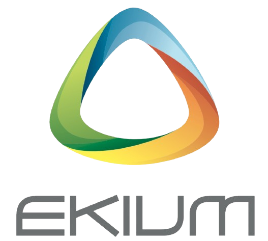
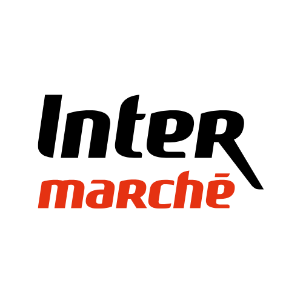

Présentation
Bienvenue sur mon portfolio !
Bonjour, je suis Ilian BOUSSAID et je suis actuellement étudiant en BUT Informatique.
Passionné par les réseaux informatiques, de mes 10 ans à mes 20 ans, je souhaite découvrir les systèmes que nos ordinateurs nous cachent... Depuis tout jeune, je m'intéresse à ce domaine aussi bien utile que mystérieux.
A travers ce portfolio, vous pourrez voir mes projets passés, mes anciennes expériences professionnelles, mais aussi les compétences que j'ai pu acquérir au fil des années.
Si vous souhaiter découvrir ma quête de perçage du mystère de l'informatique, je vous invite à continuer la visite !
Navigation rapide
Projets et compétences
Mon Cursus Scolaire
Collège de la Plaine de l'Ain - Leyment
2018 - 2021Premières explorations dans l'informatique - utilisation de logiciels comme Scratch, et certification PIX.
Brevet mention Très Bien obtenu
Lycée de la Plaine de l'Ain - Ambérieu-en-Bugey
2021 - 2024Passionné par l'informatique, premières connaissances en SNT (Sciences Numériques et Technologiques), et premières manipulation du code avec Python.
Pour la première, les spécialités choisies sont :
- Mathématiques,
- Sciences de l'Ingénieur (SI),
- Numériques et Sciences Informatiques (NSI)
En Terminale, j'ai abandonné les Sciences de l'Ingénieur.
Baccalauréat Général Mention Bien obtenu
BUT Informatique - IUT Claude Bernard - Villeurbanne
2024 - PrésentActuellement en BUT Informatique, j'explore intégralement les aspects complexes de l'informatique, notamment :
- L'algorithmie,
- Le bas niveau,
- Des langages de programmation interprétés (Python...), et compilés (Java, C...),
- Des travaux pratiques me mettant à l'épreuve,
- De l'administration système et réseau,
- De la base de données SQL et PL/SQL...
A partir de la seconde année : parcours Déploiement d'Applications Communicantes et Sécurisées.
Mes objectifs :
- En apprendre d'avantages sur les scripts Bash/PowerShell,
- Manipuler des serveurs et des services complexes,
- Configurer un parc informatique.
Et ensuite ?
FuturJ'aimerai intégré un Master en cybersécurité, potentiellement en restant dans l'université Claude Bernard Lyon 1 (me permettant d'être en alternance).
Dans la finalite : pouvoir avoir le poste de consultant en cybersécurité.
Uno en ligne : Création d'un UNO en ligne
Création d'un UNO en ligne ambitieux mélant : HTML, CSS, JS en front-end, Python en back-end, et une base de données SQL. Projet effectué à 4 personnes.
SAÉ 1.01 : Annuaire en C
Développement d’un annuaire en C, pour gérer un réseau de données.
SAÉ 1.02 : Comparaison d'algorithmes
Compréhension algorithmique et analyse de la complexité de l’annuaire en C.
SAÉ 1.03 : Installation d'un poste de travail
Etablissement d’une notice pour un déploiement de PC, et gestion des utilisateurs.
SAÉ 1.04 : Manipulation de données, et création d'une base de données
Créer une Base de données à partir des exigences d’une entreprise.
SAÉ 1.05 : Recueil de Besoins
Construction d’un site WEB, avec HTML et CSS répondant à des exigences.
SAÉ 1.06 : Économie Numérique
Analyse des enjeux financiers et légaux du secteur informatique.
SAÉ 2.01 : Application Java Itinéraire
Développement d’une application Java, en guise de récupérer l’itinéraire le plus court entre deux points.
SAÉ 2.02 : Algorithme de l'Application d'Itinéraire
Analyse et compréhension mathématique d’un problème de calcul de distance optimale.
SAÉ 2.03 : Rédiger et configurer un réseau informatique
Etablissement d’une notice pour un déploiement de PC, et gestion des utilisateurs.
SAÉ 2.04 : Faire une analyse à partir de données diverses
Analyser des données obtenues via des sources diverses.
SAÉ 2.05 : Manager et organiser un projet
Organiser un projet, établir un cahier des charges, un GANTT, et mener à bien le projet.
SAÉ 2.06 : Produire une affiche technique en équipe
Conceptualisation d’un poster à titre informatif visant à instruire sur l’informatique et une de ses technologies.
SAÉ 3.01 : Développement d'une application d'attaque de mot de passe
Concevoir une application utilisant des algorithmes simples et avancés permettant de faire des tests pour outrepasser un mot de passe crypté et hashé (bruteforce, mangling, attaque par dictionnaire…).
SAÉ 4.01 : Mise en place d'un Docker Swarm
Établir plusieurs machines virtuelles communicantes et interconnectées grâce à Docker Swarm. Objectif : monitorer les différents Docker.
Nocturnyx : Réseau social en PHP Laravel
Créer un réseau social en équipe à partir de PHP Laravel, d'une base de donnée établie au préalable, et implémentant des fonctionnalités classiques.
Support Informatique Niveau 1
Analyser, prendre le contact, et traiter les tickets au support informatique. Accueillir les collaborateurs au service Informatique.
Support Informatique Niveau 2
Analyser plus profondément les tickets complexes, optimiser leur résolution et les traiter.
Projets Applications (EKIUM)
Participer à des projets informatique pour cerner les enjeux organisationnels d'une société.
SAÉ : Situation d'apprentissage évaluée.
Progression des compétences
Expériences professionnelles

EKIUM (alternance)
Durée du contrat : Septembre 2025 - Août 2027
EKIUM, entreprise spécialisée dans l'accompagnement d'autres entreprises dans l'ingénierie, a permis de me spécialiser dans l'informatique au sein de sa DSI composée de 20 collaborateurs.
J'ai été affecté au pôle Applications qui est en charge de développer et concevoir des applications pour les collaborateurs au sein d'EKIUM.
Au sein de mon alternance, 3 missions principales m'ont été affecté :
- Le support Niveau 1
- Le support Niveau 2
- La partie Projet
Le support N1
Au Niveau 1, les tickets peuvent être de tous les sujets mais doivent rester assez simples, rapides, et réalisables peu importe le pôle. A la fin de la 1ère année d'alternance, j'ai résolu plus de 800 tickets.
La démarche commune est :
- Investigation
- Appels en internet
- Effectuer un rapport pour transmettre au N2
- Escalader le ticket
Grâce à ce niveau de support, j'ai pu améliorer de façon notable ma capacité à communiquer, à réfléchir mais également à expliquer les conceptes clés de l'informatique. Ce niveau de support a pu engager mon intégration au sein de la DSI car tous les tickets peuvent être de tous les sujets.
Le support N2
En support N2 Applications, les tickets traités sont spécifiques et peuvent concerner plusieurs sujets au sein du pôle Applications. Ils peuvent être en rapport avec les logiciels développés en interne, des demandes spécifiques d'applications de droits ou des manipulations dans l'Active Directory.
Le processus de traitement d'un ticket :
- Récupérer les informations du N1
- Analyser en profondeur
- Détecter les anomalies
- Clôturer le ticket si résolu, sinon escalader en N3
Le support Niveau 2 a été un excellent moyen pour découvrir plus en profondeur l'environnement Microsoft, la manipulation de l'Active Directory et les aspectes techniques (comme la manipulation de serveurs). Il m'a, de plus, accordé une certaine aisance pour les sujets plus délicats, dont la manipulation de données sensibles.
Partie projet
Lors de mon alternance à EKIUM, j'ai été confronté à plusieurs gros projets, sur plusieurs mois d'affilés. Le premier projet marquant est le développement d'une application pour le service RH :
Développement d'un logiciel sur PowerPlatform :
- Analyse des demandes utilisateurs
- Création de scripts de génération d'ID
- Dépendances Microsoft avec des listes SharePoint
- Manipulation No-Code et de script PowerAutomate
Grâce à ce projet, j'ai pu grandement mobiliser mes méthodes de développement mais surtout de réflexion.
En outre, à partir de début 2026, un projet majeur d'archivage du SharePoint d'EKIUM dont j'ai pris en charge est intervenu.
Procédure d'archivage :
- Prévenir l'intégralité des collaborateurs travaillant sur un projet en particulier
- Utiliser des logiciels spécialisés comme Syncovery pour copier sur un NAS les données
- Mettre à jour les données sur SharePoint
- Établir un tableau de bord mis à jour à chaque archivage
Près de 800 affaires archivées depuis le début. Ce projet m'a permis de comprendre les enjeux économiques et organisationnelles d'une grande entreprise, et d'avoir une part de responsabilité importante dans le système d'information. De plus, j'ai pu manipuler des logiciels complexes.
Dans le même projet, un script PowerShell a été crée qui se connecte au site SharePoint, extrait les groupes, et place les droits NTFS dans les dossiers archivées. Cette création et utilisation de PowerShell ont pu m'entraîner sur ce puissant outil.

Intermarché
Durée du contrat 1 : Juillet 2024 - Août 2024
Durée du contrat 2 : Décembre 2024 - Janvier 2025
Durée du contrat 3 : Juillet 2025 - Août 2025
Lors de mes contrats à Intermarché, je n'ai pas été confronté à utiliser de l'informatique, mais plutôt être au oontact du client en tant qu'employé libre service.
La mise en rayon
Mes missions principales lors des contrats :
- Placer les livraisons dans les rayons et effectuer leur mise en rayon
- Tracer les stocks, et les gérer
- Effectuer des inventaires des stocks
- Assurer une gestion des rayons attitrés
Cette première expérience m'a permis de découvrir l'aspect professionnel, et les éléments constituant une entreprise.
La relation client
Au cours de mes différents contrats, j'ai été énormément sollicité par des clients, ayant besoin des renseignements.
Les missions d'assistances :
- Renseigner les produits à un client
- Se tenir au service du client (vérifier des produits en stock par exemple)
- Apporter la confiance du magasin auprès du client
Cette expérience ne m'a pas apporté spécialement de compétences techniques mais plutôt du savoir-être au sein d'une entreprise, mais aussi être à l'écoute des clients. Cela est essentiel lorsque l'on travaille en entreprise.
Contact & Réseaux
Discutons de votre prochain projet !
Pour plus d'informations, veuillez me contacter via LinkedIn, ou bien à partir de mes coordonnées présentes sur mon CV.
Ce sera avec grand plaisir de vous répondre !